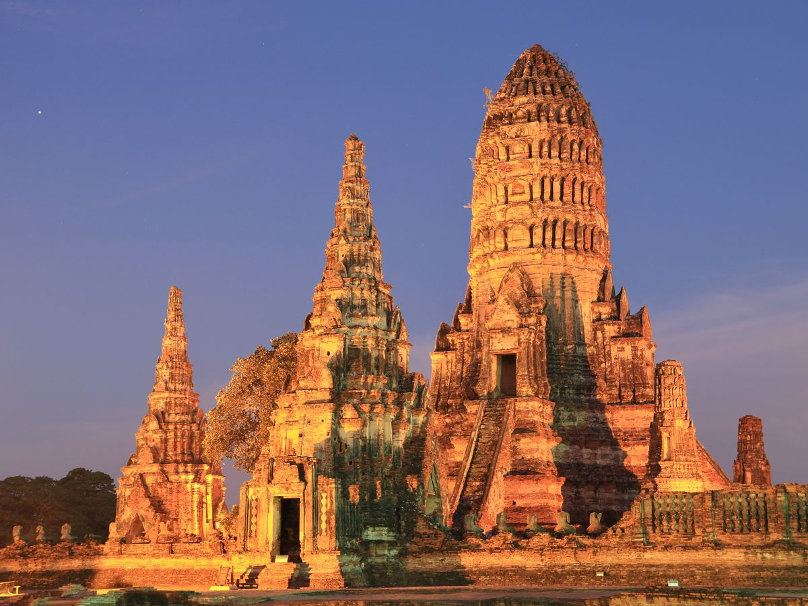
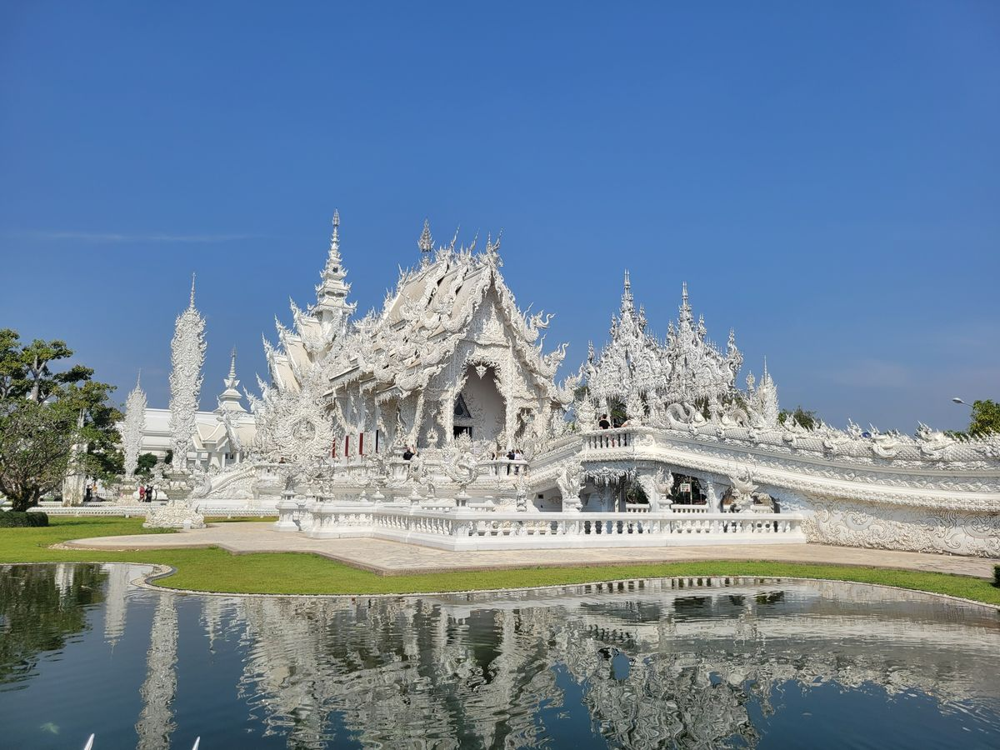

Thailand
Thailand Grand Discovery
Golden temples, ancient Ayutthaya, northern hills
- 6N / 7D
- Travel style: Couple
- 3 hotel stays
- Delhi ✈start
- Bangkok3N
- Chiang Rai1N
- Chiang Mai2N
Day by day
-
Distance: Approximately 35 km from Bangkok city centerTransfer Time: Approximately 50 minutes–1 hour
Upon arrival at Bangkok International Airport, you will be warmly welcomed by our representative.
After completing the airport formalities, you will be transferred to your hotel for check-in and relaxation.
The standard hotel check-in time is 2:00 PM. The remainder of the day is free for you to relax or explore the city at your own pace.
Meals: NoneOvernight: Hotel in Bangkok
-
Tour Type: PrivateDeparture: Approximately 7:40–8:00 AMTour Duration: Approximately 8 hours
After breakfast, meet your guide and driver at the hotel and begin a full-day sightseeing tour exploring the highlights, history, culture, and heritage of Bangkok.
The Grand Palace & Wat Phra Kaew
Start your tour with a visit to the Grand Palace, one of Thailand's most significant landmarks and a magnificent example of traditional Siamese architecture.
Explore the spectacular Wat Phra Kaew (Temple of the Emerald Buddha), located within the Grand Palace complex. Admire its beautiful architecture, the Golden Chedi, the Pantheon of the Chakri Kings, and the distinctive Eight Colored Towers.
Wat Pho – Temple of the Reclining Buddha
Continue to Wat Pho, one of Bangkok's most renowned temples and an important center of traditional Thai knowledge and massage. The temple complex features beautiful murals, inscriptions, sculptures, and religious artwork.
Chao Phraya River & Bangkok Canals
After lunch, enjoy a scenic boat journey along the bustling Chao Phraya River and Bangkok's traditional canals, locally known as Klongs.
Cruise through the quieter residential areas of Thonburi and experience a more traditional side of Bangkok, away from the modern high-rise buildings of the city center.
Wat Arun – Temple of Dawn
Make a stop at Wat Arun, also known as the Temple of Dawn. Located along the Chao Phraya River, this iconic temple is one of Bangkok's most recognizable landmarks and offers beautiful views of the surrounding river and cityscape.
After completing the tour, return to your hotel.
Important Notes:
- Photography is permitted within the Grand Palace grounds and the Emerald Buddha Temple compound, but photography is not allowed inside the buildings.
- Visitors are required to dress respectfully when visiting the Grand Palace and temple complex. Sleeveless clothing, shorts, and inappropriate footwear should be avoided.
- The inner courts of the Grand Palace may be closed on Sundays. Therefore, it is recommended to avoid scheduling this excursion on a Sunday.
Meals: BreakfastOvernight: Hotel in Bangkok
-
Tour Type: PrivateDeparture: Approximately 7:40–8:00 AMTour Duration: Approximately 8 hours
After breakfast, meet your guide and driver at the hotel and depart for Ayutthaya, the former capital of Thailand, located approximately 75 km north of Bangkok.
Bang Pa-In Summer Palace
Begin the excursion with a visit to Bang Pa-In Summer Palace, a beautiful royal residence featuring a fascinating blend of Thai and European architectural influences.
Ancient City of Ayutthaya
Continue to the historic city of Ayutthaya, famous for its magnificent temples, ancient ruins, and rich cultural heritage.
Ayutthaya was once an important international trading center, with connections extending across Asia and Europe. The city developed into a cosmopolitan hub with trade links to countries including China, Japan, Indonesia, Portugal, the Netherlands, France, and other regions.
Although much of the ancient city was destroyed during the Burmese invasion in 1767, its remaining temples, monuments, and ruins continue to showcase the grandeur of the former capital.
Explore some of the most impressive historical sites and ruins, with plenty of opportunities to take memorable photographs.
Enjoy lunch at a local restaurant in Ayutthaya before continuing your sightseeing.
After the tour, return to Bangkok by coach and transfer back to your hotel.
Important Note: Proper attire is required when entering the Bang Pa-In Summer Palace. Shoulders and knees should be covered.
Meals: BreakfastOvernight: Hotel in Bangkok
-
Tour Type: PrivateTour Duration: Approximately 10 hours
After breakfast, enjoy some free time at the hotel before transferring to Bangkok Airport for your flight to Chiang Rai.
Upon arrival at Chiang Rai International Airport, you will be warmly welcomed by your guide and driver.
Distance to Chiang Rai City: Approximately 12 kmTransfer Time: Approximately 20 minutes
Kayan Village
Begin your Chiang Rai adventure with a visit to a Kayan village, where you can learn about the traditional culture and way of life of the Kayan Lahwi community.
Discover their traditional customs and learn about the cultural significance of the distinctive brass neck rings worn by some women in the community.
Golden Triangle
Continue to the famous Golden Triangle, where the borders of Thailand, Laos, and Myanmar meet.
Enjoy panoramic views of the Mekong River and surrounding landscapes, and visit the impressive Golden Buddha statue.
Opium Museum
Continue your exploration with a visit to the Opium Museum, which presents the history of opium and its role in the development of the Golden Triangle region.
After completing the tour, transfer to your hotel for check-in and relaxation.
Meals: BreakfastOvernight: Hotel in Chiang Rai
-
Distance: Approximately 200 kmTour Type: PrivateDeparture: Approximately 7:30–7:45 AMTour Duration: Approximately 10 hours
After breakfast, begin your journey from Chiang Rai to Chiang Mai, visiting some of Northern Thailand's most distinctive cultural and artistic attractions along the way.
Blue Temple – Wat Rong Suea Ten
Start with a visit to the Blue Temple, also known as Wat Rong Suea Ten. Designed by a local Chiang Rai artist who was previously involved in the artistic work of the White Temple, the temple is known for its striking blue architecture and contemporary interpretation of Buddhist art.
Black House – Baan Dam Museum
Continue to the Black House (Baan Dam Museum), an intriguing collection of art and architectural works created by renowned Thai national artist Thawan Duchanee.
The museum features numerous structures and art installations, including traditional Lanna-style buildings and distinctive works incorporating materials such as horns, bones, and animal skins.
White Temple – Wat Rong Khun
Next, visit the world-famous White Temple (Wat Rong Khun), designed by celebrated Thai artist Chalermchai Kositpipat.
The temple is renowned for its brilliant white architecture, intricate detailing, and reflective glass decorations that create a spectacular visual effect.
Wat Phra That Doi Suthep
Continue your journey toward Chiang Mai and visit Wat Phra That Doi Suthep, one of Northern Thailand's most revered temples.
Located approximately 1,050 meters above sea level, the temple is famous for its magnificent golden chedi and panoramic views overlooking Chiang Mai and the Ping Valley.
Visitors who wish to experience the traditional approach to the temple can climb the 306-step staircase, flanked by decorative Naga serpent sculptures.
After completing the day's sightseeing, continue to Chiang Mai and transfer to your hotel for check-in and relaxation.
Meals: BreakfastOvernight: Hotel in Chiang Mai
-
Tour Type: SIC / PrivateDeparture: Approximately 7:30–7:45 AMTour Duration: Approximately 8 hours
After breakfast, enjoy a memorable day at Kanta Elephant Sanctuary, where you can learn about elephants, their daily routines, behavior, and care.
The experience provides an opportunity to spend time around the elephants in a sanctuary environment while learning about their history and well-being.
Elephant Sanctuary Experience
08:30 AM – Hotel Pickup
Pick up from your hotel or accommodation in Chiang Mai city.
09:00 AM – Journey to the Sanctuary
Travel approximately 50 minutes north of Chiang Mai through scenic countryside, rolling hills, forests, and local farming areas.
10:00 AM – Arrival at Kanta Elephant Sanctuary
Arrive at the sanctuary and change into traditional clothing.
10:30 AM – Meet & Feed the Elephants
Prepare fresh fruit and spend time meeting the elephants. Participate in feeding and observe them as they roam and interact in their surroundings.
12:00 PM – Lunch
Enjoy lunch at the sanctuary.
01:00 PM – Prepare Herbal Sticky Rice
Learn how to prepare sticky rice mixed with herbs for the elephants while discovering more about their health, care, and behavior.
02:00 PM – Elephant Walk & River Experience
Spend more time with the elephants before accompanying them on a walk toward the river. Depending on the sanctuary's daily program and conditions, enjoy feeding and bathing activities while observing the elephants in their surroundings.
Take time to capture memorable photographs and enjoy the peaceful natural environment.
03:00 PM – Refreshment Break & Return
Enjoy tea and coffee before departing the sanctuary and returning to your hotel.
Upon arrival, relax at the hotel and enjoy the remainder of the evening at leisure.
Meals: Breakfast & LunchOvernight: Hotel in Chiang Mai
-
Distance: Approximately 12 km from Chiang Mai city centerTransfer Time: Approximately 25–30 minutes
After breakfast, meet your guide and driver at the hotel lobby and transfer to Chiang Mai International Airport for your onward flight.
Your Thailand holiday comes to an end with wonderful memories of Bangkok's cultural landmarks, Ayutthaya's ancient heritage, Chiang Rai's temples and Golden Triangle, and Chiang Mai's mountain and elephant experiences.
Where you'll stay
- W22 by Burasari Hotel, Bangkok or similar
- La Luna Hotel and Resort, Chiang Rai or similar
- Chiang Mai Orchid Hotel, Chiang Mai or similar
What's included
Included
- Accommodation in twin/double room with daily breakfast (01 pax in single room used)
- Services of a driver and private air-conditioned vehicle during all tours and transfers (from 1 to 7 pax Van will be provided, from 8 pax to up 2 Van or Bus provided)
- Experienced English-speaking guide during all tour and transfers
- Full day SIC tour to Elephant Camp at Kanta with lunch (Applied for group from 1 to 7 pax).
- Group from 8 pax to up, private tour will be provided)
- Entrance fees for all visits as mentioned in the itinerary
- Private boat for sightseeing in Bangkok, Golden Triangle.
- 02 bottles of mineral water per person per day on car/van/bus - on days of transfer and sightseeing only
- Local logistic fee (Government Tax, local insurance, Express and parking fee)
Not included
- Early check-in or late check-out
- Personal expenses, such as laundry, telephone, drinks, etc. All other services not specified in the itinerary
- International & Domestic flight tickets
- Additional transfer required due to any emergency
- Tipping for guides, drivers, hotel staff, restaurant staff, boat riders, etc.
- Visa - as per country’s requirements
- Travel insurance (we highly recommend that you purchase adequate insurance)
Price
- Base Price
- ₹1,11,740
- Taxes & Fees
- ₹5,590
- Discount Applied
- −₹1,330
Total₹1,16,000per person
Dates, hotels and days can all be changed. Tell us what you'd like and we'll send your final quote on WhatsApp.